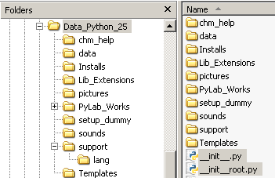
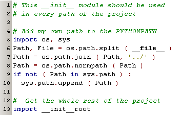
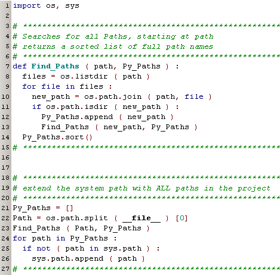

Imports  (november 2008)
(november 2008)
Application Designer / Domain Expert / Control Designer / Core Developer
Introduction
Redundancy is one of the worst items in software. You have to maintain and extend code at more than one place, and if you don't realize that some code is redundant, debugging is a hell of a job, certainly in a dynamic language as Python is. Therefor we give higher priority to redundancy removal than to hierarchical structure. As a consequence, this means that every file of the project should be reachable from any other file. So it's essential to have a good PYTHONPATH and a good import strategy. A second demand is that every module should be able to act as a main file by runing it's main section.
Solution
The solution_old worked perfect until I wanted to build a windows binary distro.
The root of all programs, contains a template __init__.py.

By the program Deploy.py (which also performs other tasks), this __init__.py is copied to all necessary locations.
The __init__.py module will search for the module __init__root.py, starting at it's own directory and then walking the tree up. Then it will add the path where __init__root was found to the PythonPath and imports __init__root.
__init__root.py will add all the subdirectories, starting at it's own location walking down, to the PythonPath.
The above procedure works both in the working directory, and also in the windows binary distro.
Solution_old
As every directory must have an __init__ module, we can use the __init__ module to ensure all the paths are reachable. So every module must import __init__ as the first module. As every file knows at what level of the root it's positioned, the __init__ module can easily import a module at the root level. Every __init__ module in every subpath is exactly like this :

Line 7, points to the root directory, so this might be different depending on the level of the current directory.
At line 9,10 the root is added to the PythonPath ( if it's not already there).
Then at line 13 the module __init__root, located in the root is imported, which will make a complete PythonPath.
The __init__root module, recursive searches for all subdirectories and adds them to the Python Path ( if they are not yet there).
